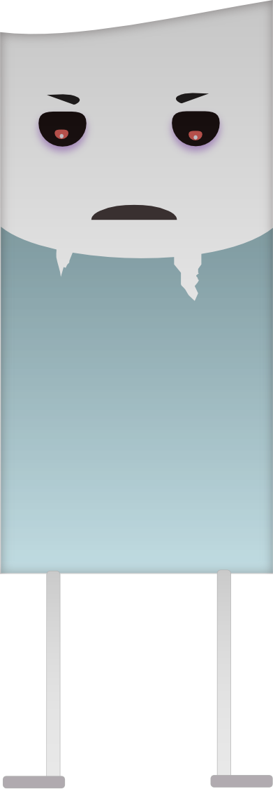

Historia
Las tierras de Gemeotry se han sumido en el caos cuando Berub, la goma, harta de ser la única en Gemeotry que no posee una forma geométrica, ha decidido borrar con su poder todo el reino. Es entonces, entre la desesperación de los habitantes de Gemeotry que asciende un héroe, el triángulo Letriang, que se embarca en la aventura de recolectar carboncillos de poder para devolverle al reino su antiguo esplendor y detener a la malvada goma.
Letriang

Forma: Triangular.
Color: Amarillo-verdoso.
Forma de atacar: Con el vértice superior.
Personalidad: Alegre, valiente, aventurero.
Berub
